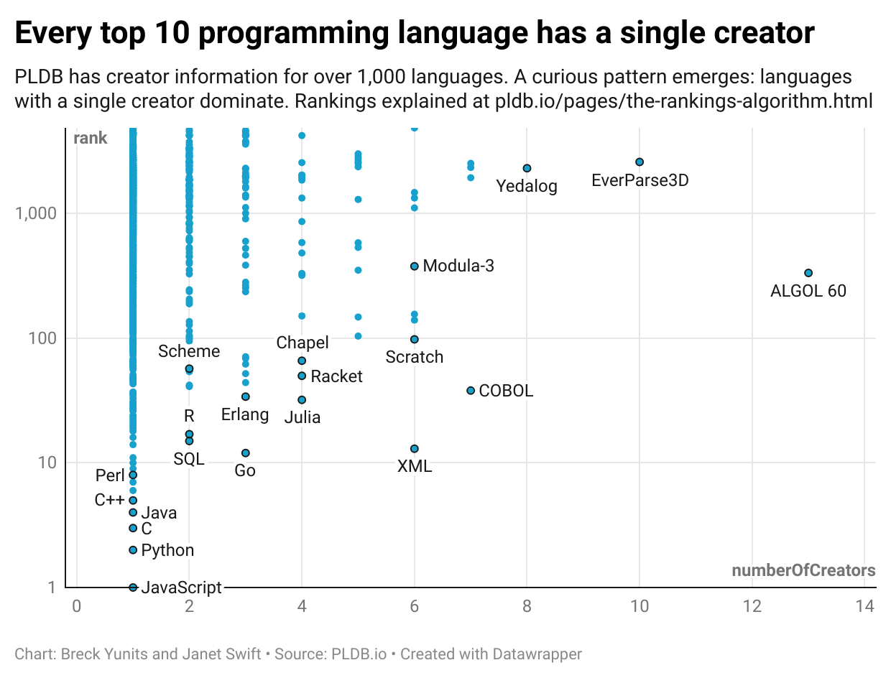
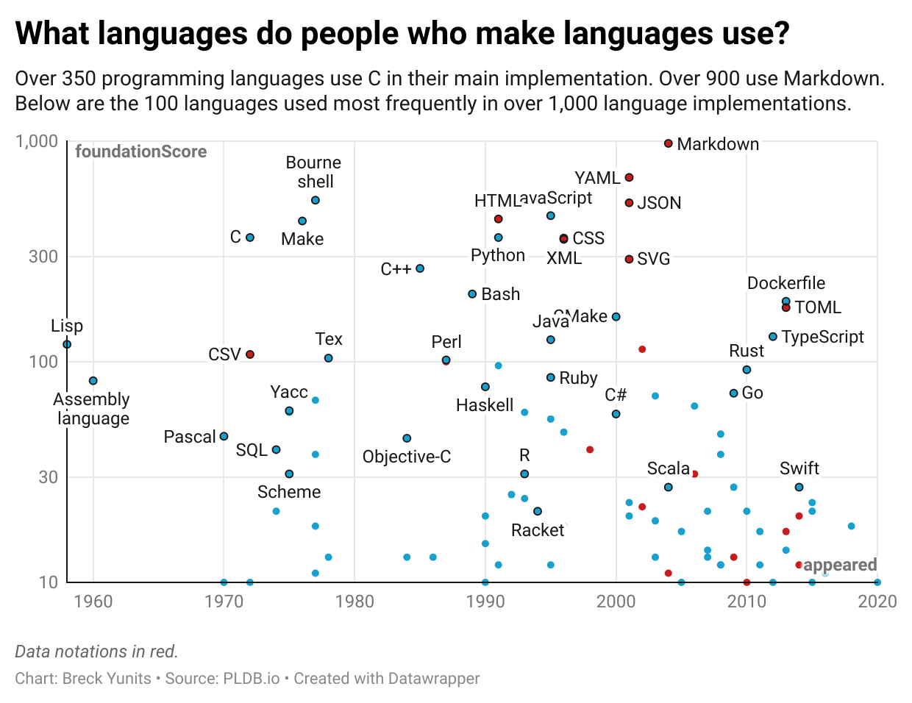
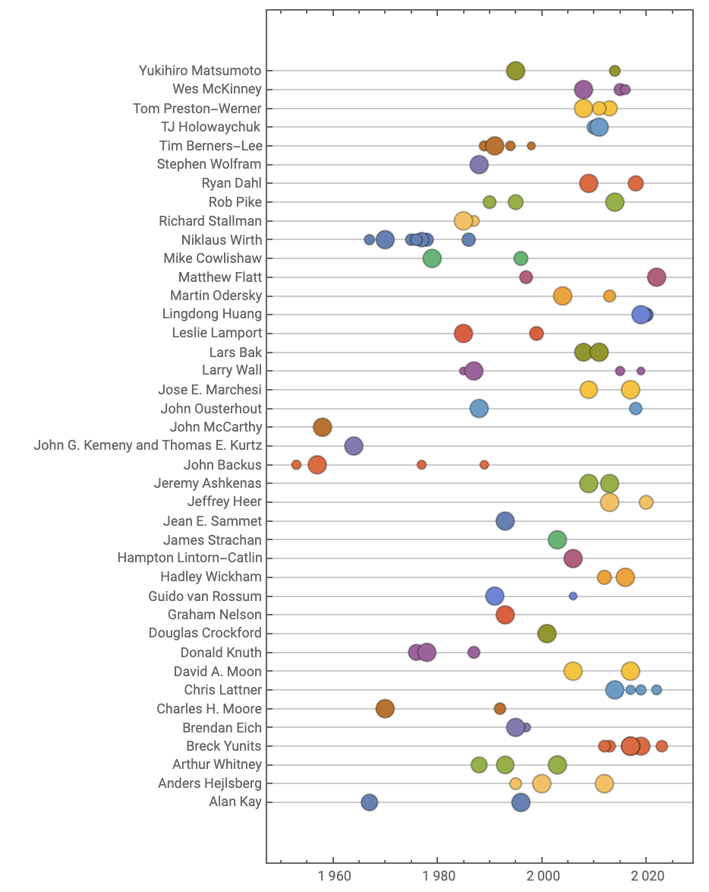
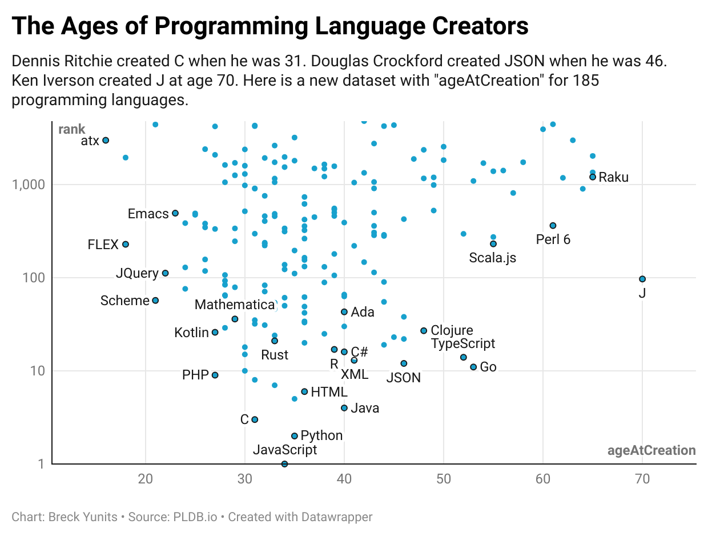
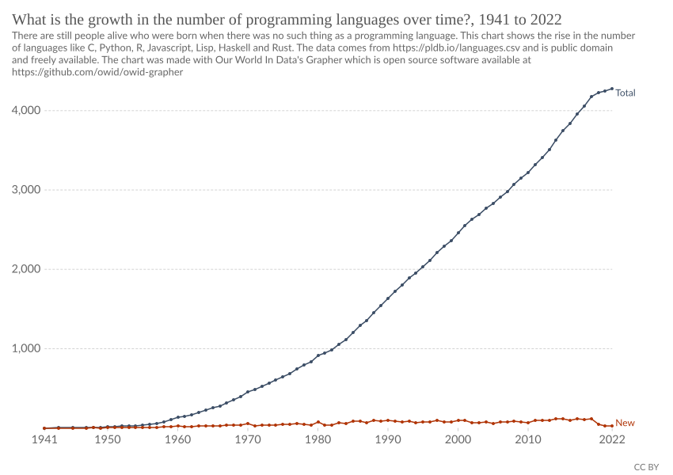
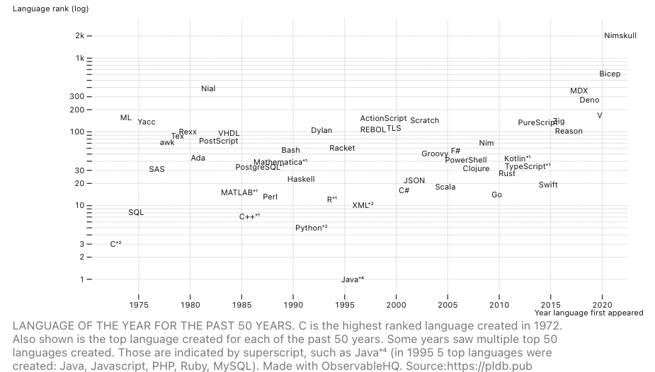
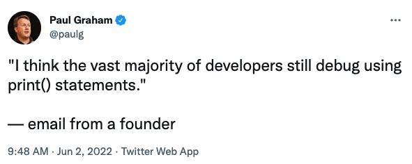
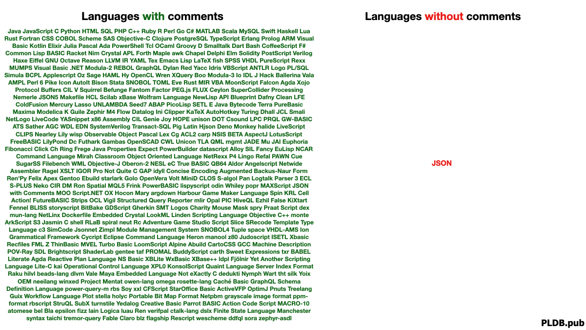
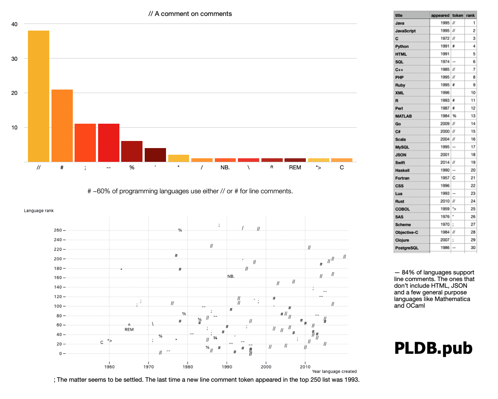

January 26, 2025 — Chris Lattner created many of the core platforms today's programmers build on including LLVM, Clang, Swift and MLIR. Now he is focused on a new language, Mojo, which allows Python programmers to write code that runs orders of magnitude faster. Chris took the time to talk to us about some of the new stuff in Mojo; his path toward mastering the entire stack; and his daily habits that help him produce hit after hit. Thank you for your time Chris!
Continue reading...The three dominant platforms for programming language creators (r/ProgrammingLanguages, Lobsters, and HackerNews), all of which I helped grow for years, banned me. Most of my comments and submissions are very high value add to these communities, but occasionally I post things the moderators disapprove of (but usually the users like). I have little respect for moderators who put their own self-interests ahead of free speech and the interests of their communities.
Thereforce I launched a new subreddit r/pldb, who's guiding principle is very simple: an uncensored community about Programming Language design. No manual censorship for non-anon posters. Feel free to post your craziest, freshest ideas. Get value from the upvotes and the downvotes. As long as you are brave enough to post under your real name, you won't be censored. I think great ideas can come from anywhere and can often start out as terrible, really unpopular ideas. The new sub is a place to nurture those ideas.
Continue reading...November 18, 2024 — We started PLDB 2,558 days ago (7 years!). It quickly became a collaborative project with hundreds of contributors all over the world, and I'm so excited by how it's evolved. The past year has been a big one. In addition to contributions from dozens of repeat and new contributors, and interviews with Daniel Kallin, Douglas Crockford, Steven Drucker, and Hongbo Zhang, we've done a ton of behind-the-scenes work:
- the database now has over 5,000 concepts
- the site works entirely offline, including search and the explorer
- you can now edit the site live in your browser using ScrollHub (perf still a bit buggy)
- the site is now 100% Scroll files; no separate database software
I think this upcoming year will be a big one. I hope we radically improve crawlers and expand the database, publish more interesting analysis and interviews, and most importantly, launch some new community features to connect and build on the nascent community we have so far. I look forward to further leveraging LLMs while keeping our practice of having humans review all content.
Thank you everyone for your help and support, and together let's continue to build the next great programming languages!
Continue reading...October 31, 2024 — Moonbit builds fast Wasm. It is one of the fastest growing languages in PLDB, cracking the top 300 in less than 2 years. We got the chance to talk to Moonbit's creator, Hongbo Zhang, who explained to us why Moonbit exists and the effort that has gone into creating the language, compiler, and tooling behind it. Thank you for your time Hongbo!
Continue reading...September 11, 2024 — Thank you to the volunteer contributions of many people over many years (especially Hari!) which has made this visualization possible.
August 15, 2024 — Steven Drucker's SandDance (⌨️) is both twenty years in the future and timeless. SandDance allows humans to see and interact with data the way you interact with particles in the real world. Steven sat down with us to talk about the origins of SandDance and his 29 years at Microsoft Research. Thank you for your time Steven!

Visualizing PLDB using SandDance.
August 7, 2024 — Douglas Crockford is well known for creating JSON, which serves billions everyday, but less known is his deep understanding of language design and how much insight he shares with the world. Douglas was generous enough to take a small break from his own projects to chat with us about language design. Thank you for your time Douglas!
Continue reading...July 25, 2024 — Daniel Kallin's brilliant homepage shows technical chops and design passion. Therefore it's not surprising that Daniel created nomnoml: a fast language and tool for generating beautiful diagrams. Daniel sat down with us to talk about nomnoml, which he designed for users to "feel like you're drawing with Ascii". Thank you for your time Daniel!

July 15, 2024 — Today PLDB introduces a new term to the English Language: "Leet Sheet".
Continue reading...May 29, 2024 — Janet's Swift post sparked me to add a computed measure to PLDB calculating the number of creators a language has. The results are below. You can also explore the data yourself.

May 28, 2024 — PLDB now has foundationScore, which measures how often a language is used in the main implementations of other languages.
To calculate foundationScore, we download the git repos for all open source languages in PLDB (which is >98% of them), run cloc on each, and sum the output.
The results are below. Click the image for the interactive version. You can also see all the foundationScore data in the PLDB Explorer.

Anton Antonov posted an analysis of PLDB's age data.
Click the image below to view his interactive notebook.

From Anton Antonov's Computational exploration for the ages of programming language creators dataset.
May 19, 2024 — Dennis Ritchie created C when he was 31. Douglas Crockford created JSON when he was 46. Ken Iverson created J at age 70. Here is a new dataset with "ageAtCreation" for 185 programming languages.
| 36median age | 37.5avg age |
| 16min age | 70max age |

February 27, 2023 — Mike Cowlishaw is a distinguished computer scientist and creator of Rexx and NetRexx. He has worked on many other programming languages, including PL/I, C, and Java. Dr. Cowlishaw is a Visiting Professor at the Department of Computer Science at the University of Warwick. He is a Fellow of the Royal Academy of Engineering, elected for his contributions to the field of engineering, and is a retired IBM Fellow. His relentless spirit has catapulted too many contributions to count yet he remains humble and accessible :)
Continue reading...February 8, 2023 — Dr. John Ousterhout is a computer science luminary who has made significant contributions to the field of computer science, particularly in the areas of operating systems and file systems. He is the creator of the Tcl scripting language, and has also worked on several major software projects, including the Log-Structured file system and the Sprite operating system. John Ousterhout's creation of Tcl has had a lasting impact on the technology industry, transforming the way developers think about scripting and automation.
Continue reading...January 24, 2023 — Josef Pospíšil (Pepe) is a programming enthusiast, first with Basic in 1986, then the first Rubyist in the Czech Republic, and now a contributor to the language Janet.
Continue reading...November 22, 2022 — Dr. Kartik Agaram is a professional programmer by day and the author of several open source projects that try to demystify computers. His projects all show a great love for programming and empathy for readers grappling with a strange codebase.
Continue reading...November 18, 2022 — Niklaus Wirth(🙏🏽) has designed programming languages all over the world that have had immense impact. And yet, he still maintains great humility and somehow finds time for mentoring the next crop of programming language designers. Thank you for your time Dr. Wirth!
Continue reading...November 15, 2022 — Dr. Brian Kernighan is a Canadian computer scientist who contributed to the development of UNIX at Bell Labs. Along with Dennis Richie, he co-authored a fundamental book on C, The C Programming Language. He has been training the next generation of programmers at Princeton University since 2000 and has been monumental in his contribution to the computer science community at large. He wrote the first documented “Hello World!” program and to that we say, “Hello, Brian!”.
Continue reading...November 11, 2022 — Dr. Scott Fahlman is a Professor Emeritus in the Carnegie Mellon’s School of Computer Science. He is a computer programming language connoisseur and the original neural network jedi master. He was one of the core developers of the Common Lisp Language and his current work includes Artificial Intelligence. Dr Fahlman is as notably kind as he is a humble scientist. Befittingly, he is the originator of the internet's first emoticon, sideway smile :-)
Continue reading...
The above SVG is also available as a png.
{kind=link}
The code for the visualization above was written in the Explorer language.
You can export the data using this Ohayo script:
Previous posts in this series

The above SVG is also available as a png.
{kind=link}
The code for the visualization above was written in the Explorer language.
Continue reading...
July 21, 2022 — 1995 was an exceptional year for programming languages: Java, Javascript, PHP and Ruby were all created in 1995. I was curious what the top language was for each of the past 50 years.
Continue reading...
July 16, 2022 — C and R are two famous programming languages whose name is a single letter. In an effort to retire this practice (😉), I've made an infographic to show that all the letters are taken.
Continue reading...
July 15, 2022 — Paul Graham—creator of Arc and Bel—started an interesting thread last month about print("debugging").
Continue reading...
July 14, 2022 — JSON is the only popular language in PLDB without comments. JSON supports neither line comments nor multiline comments.
Continue reading...
July 13, 2022 — About 85% of the languages in PLDB have line comments.
Continue reading...June 23, 2022 — I started PLDB 1,681 days ago(~4.5 years). After a big lull, I am excited to announce the new release!
- all source code for the site and database is now on GitHub.
- the database went from 3,800 to 4,266 entries.
- there are now pages listing the top 100 languages, top 250 languages, and languages by origin community.
- each language page now lists all fields.
- the site now runs on Scroll instead of Jekyll.
I am excited to have this release behind me and hope to get more data, more crawling scripts, and more analysis up over the next few months. Thanks for reading!
Continue reading...November 18, 2019 — I started PLDB 2 year ago today! Since that time:
- In the past year, PLDB has gone from less than 1,400 languages to over 3,800! Almost a 3x increase!
- In the past year, I added the programming language features page which now lists 90 features!
- I also added the file extensions page which lists over 1,300 file extensions!
- The programming language design conference page has 6 conferences listed for 2020.
Unfortunately the number of articles on PLDB is 14 (counting this one). Just like last year, limited time and resources has meant building up the dataset took priority. Hopefully the next year will see a lot of growth in number of posts!
Continue reading...September 7, 2019 — I have done many problems on Project Euler but I've never participated in competitive programming. The other day I got curious, what does the competitive programming landscape look like?
I started my quest by watching a great interview with a competitive programmer. Then I did some searching. Below are my results.
There are 16 major programming competitions
The first one started in 1970. A few of the newer ones are online only.
Most of them started or are hosted in the USA

May 29, 2019 — There are around 7.574 billion people in the world. How many of them are programmers?
The answer, of course, depends on how you define "programmer". But before I define "programmer" and share my estimates, let's look at what some other sources say.
Continue reading...February 7, 2019 — Like millions of other programmers, every day I depend on central package repositories (CR) like npm, PyPI and CRAN.
The other day I was curious: does every programming language have one of these? I decided to find out. I pointed my crawler and trained a model to check for a package repository for every one of the 3,006 languages I am tracking. The results surprised me.
★ Only 1% have them
January 24, 2019 — Python, as one of the top 10 programming languages in the world, is the most popular programming language that treats indentation as significant. In these offside languages, programmers indent their code blocks instead of using braces, brackets, or other visible characters.
I was curious about how common these languages were so I did some brief analysis to answer these questions:
- How common is this type of language?
- How many languages use significant indentation?
- Are new indentation languages on the rise?
1) Fewer than 2% of programming languages have significant indentation

November 18, 2018 — I started PLDB 1 year ago today! Since that time:
- PLDB has gone from less than 400 languages to over 1,300! A 3x+ increase!
- PLDB has gone from less than 1GB to over 140GB of raw data! A 100x+ increase!
- PLDB has gone from tracking a few dozen dimensions to over 1,350! A 30x+ increase!
Unfortunately the number of articles on PLDB is 9 (counting this one). Limited time and resources has meant building up the dataset took priority. Hopefully the next year will see a lot of growth in number of posts!
Continue reading...November 9, 2018 — Before GitHub started in 2008, the source code for nascent programming languages was stored in a variety of places. In the early days it was physical media; later on it was publicly accessible servers; and even later it started moving to online source control systems like self-hosted SVN servers or Sourceforce.
But nowadays new language creation happens on GitHub more than anywhere else. Of the 44 languages created in 2008 that I track, 7% were put on GitHub that same year. Last year it was over 50%.

October 28, 2018 — As the chart below shows, the number of programming languages beginning with a certain letter varies as much as 10x by letter.

December 12, 2017 — As I build up my database of programming languages I hope to be able to answer questions like:
- is the rate of new language creation accelerating, slowing down, or constant?
- what spurs the creation of new programming languages?
- can we predict how many new languages will be released next year? in 5 years? in 10 years?
At the moment I am tracking 533 computer languages and I currently have creation years for more than half of those, including for 271 of the most popular ones.
Here is a simple line graph of the cumulative number of languages I have by year.

December 11, 2017 — I was looking to spruce up the walls with some interesting posters and found a few well designed visuals.

November 25, 2017 — Last week I explored the question "how many programming languages are there in the world?"
My current estimate is between 5,000 and 25,000 active computer languages.
But perhaps the number is higher, if you include all active external web APIs.
First, what do other people say?
Continue reading...November 20, 2017 — ~7,099 spoken languages exist. But how many programming languages exist?
This is one of the questions I aim to answer with PLDB. I am building a comprehensive database of programming languages.
Spoken languages vary widely in popularity. For example. English has 1.5 billion total speakers and 375 million native speakers. Hawaiian, an endangered language, has only ~26,000 native speakers.
Similarly, some programming languages are very popular, others are used moderately, and many are completely abandoned. Javascript may be the most popular programming language, with approximately ~5.3 million LinkedIn users claiming it as a skill.
The number of programming languages in the world depends on the rules you establish for deciding whether or not a language counts.
First, what do other people say?
Continue reading...November 18, 2017 — Welcome to PLDB: a Programming Language Database!
The goal of this site is to build a comprehensive database of programming languages and their common features.
This site is for two types of people:
- Programming language creators. PLDB is organized big data to help you create great new languages, and improve existing ones. When making design decisions, quickly look up what features other languages have tried. Benefit from the experiences of thousands that have built languages before you. If you are researching something and can't find what you need here, you can add it and send a pull request, or share your request on Twitter.
- Programming language users. PLDB provides a data-driven view of the programming language universe, to demystify the world of programming languages for you, and provide sound strategic and tactical advice to help you in your projects and your career. If you have a question not answered by the data here, you can add it and send a pull request, or share your request on Twitter.